JavaScript is a client-side scripting language that runs in the browser, enabling web pages to respond to user actions without requiring a page reload. It's one of the core technologies of the World Wide Web, alongside HTML and CSS.
1. Interactivity: JavaScript makes web pages interactive by allowing actions like form validation, dynamic content updates, animations, and user interface enhancements.
2. Event Handling: It responds to user interactions like clicks, keyboard inputs, and mouse movements.
3. Cross-Browser Compatibility: JavaScript runs on all major web browsers, including Chrome, Firefox, Safari, and Edge.
4. Object-Oriented: Though not strictly an object-oriented language, JavaScript supports object-oriented programming concepts like objects, inheritance, and encapsulation.
5. Asynchronous Programming: JavaScript supports asynchronous operations through callbacks, promises, and async/await, making it ideal for handling tasks like data fetching without blocking the main thread.
1. DOM Manipulation: JavaScript can dynamically modify HTML and CSS, enabling the creation of dynamic user interfaces.
2. Form Validation: Before data is sent to a server, JavaScript can validate user inputs to ensure they meet the required criteria.
3. Event Handling: JavaScript can execute code in response to user actions, such as clicking a button or hovering over an element.
4. AJAX: JavaScript allows for asynchronous data loading, making web pages faster and more responsive by updating parts of the page without refreshing the whole page.
5. Games: Simple browser-based games can be created using JavaScript.
In JavaScript, variables are containers for storing data values. You can declare variables using three keywords: 'var', 'let', and 'const'.
JavaScript supports various data types, categorized as either primitive or non-primitive.
Number: Represents both integer and floating-point numbers.
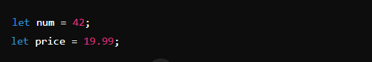String: Represents a sequence of characters. Strings are enclosed in single (`'`), double (`"`), or backticks (```) for template literals.
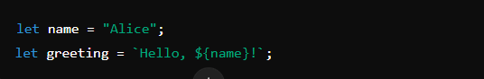Boolean: Represents logical entities and can have two values: `true` or `false`.
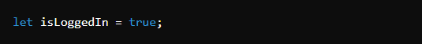Undefined:-A variable that has been declared but has not been assigned a value.
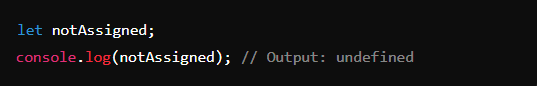Null: Represents the intentional absence of any object value. It's a primitive type in JavaScript.
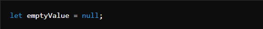Symbol: Introduced in ES6, Symbol is a unique and immutable primitive value, often used to create unique object keys.
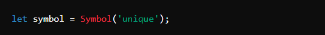BigInt: Introduced in ES2020, `BigInt` is used to represent integers larger than the `Number` type can handle.
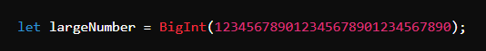Object: Used to store collections of data and more complex entities.
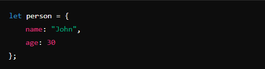Array: A special type of object used to store multiple values in a single variable.
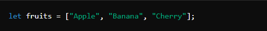Function: Functions are blocks of code designed to perform a particular task. They are objects in JavaScript and can be assigned to variables.
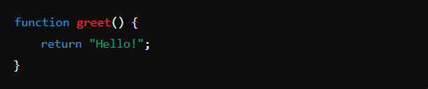JavaScript automatically converts between different data types as needed, but you can also manually convert types.
Example of Type Conversion:
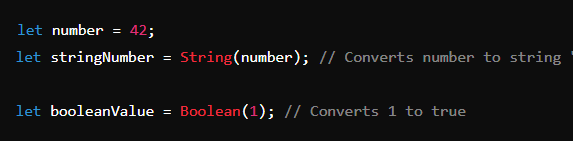Understanding variables and data types in JavaScript is fundamental for writing effective code, as they form the basis for handling and manipulating data within your programs.
In JavaScript, operators are symbols that perform operations on operands (values or variables). Here's a breakdown of the different types of operators you mentioned:
The if statement executes a block of code if a specified condition is true.
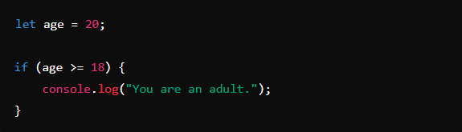The else statement executes a block of code if the if condition is false.
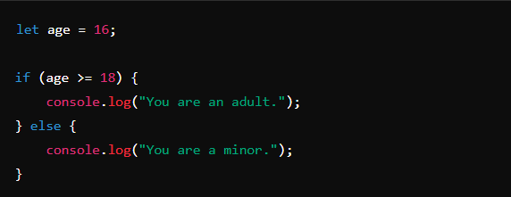The else if statement specifies a new condition to test if the previous if condition is false.
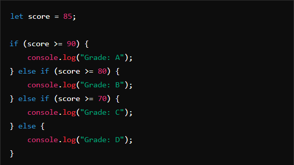The switch statement evaluates an expression and executes code blocks based on the expression’s value. It’s often used as an alternative to multiple if-else statements.
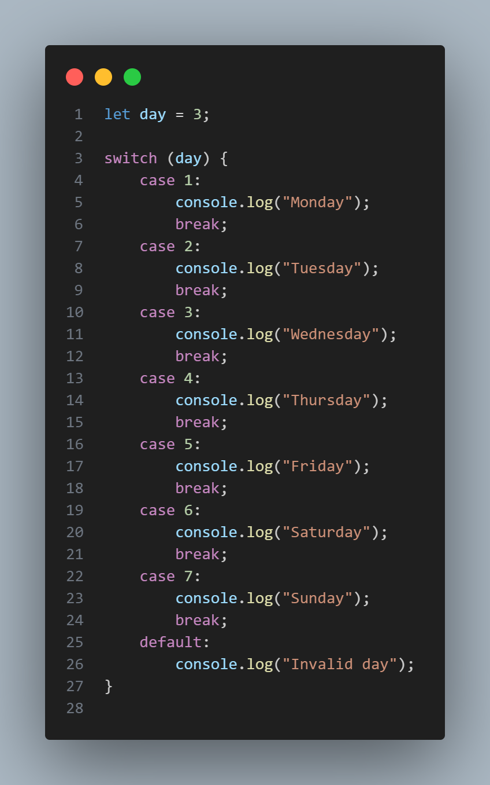The for loop is used when you know how many times you want to iterate through a block of code.
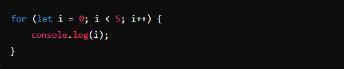The while loop continues to execute a block of code as long as the specified condition remains true.
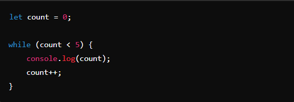The do-while loop is similar to the while loop, but it guarantees that the block of code will execute at least once before checking the condition.
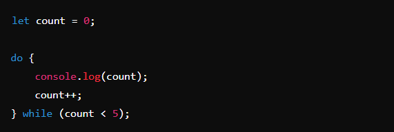One of the most important aspects of JavaScript is its ability to manipulate strings, which are sequences of characters. In this blog post, we will explore the basics of JavaScript strings and the various string methods that can be used to manipulate them.
A string in JavaScript is a sequence of characters enclosed in either single or double quotes. For example, the following are valid strings in JavaScript:
"Hello World"
'Hello World'
JavaScript provides a number of built-in methods for manipulating strings. Some of the most commonly used string methods are:
length : This method returns the number of characters in a string. For example, the following code will return 11:
var str = "Hello World";
console.log(str.length);
concat : This method is used to concatenate (combine) two or more strings. For example, the following code will return "Hello World":
var str1 = "Hello";
var str2 = " World";
console.log(str1.concat(str2));
indexOf:This method is used to find the index of a specific character or substring in a string. For example, the following code will return 6:
var str = "Hello World";
console.log(str.indexOf("W"));
slice :This method is used to extract a portion of a string. For example, the following code will return "World":
var str = "Hello World";
console.log(str.slice(6));
replace: This method is used to replace a specific character or substring in a string. For example, the following code will return "Hello Universe":
var str = "Hello World";
console.log(str.replace("World", "Universe"));
toUpperCase & toLowerCase:- These methods are used to convert a string to uppercase or lowercase letters. For example, the following code will return "HELLO WORLD" and "hello world" respectively:
var str = "Hello World";
console.log(str.toUpperCase());
console.log(str.toLowerCase());
These are just a few of the many string methods available in JavaScript. By understanding the basics of strings and the various methods that can be used to manipulate them, you can create more dynamic and interactive web pages. So, start experimenting with different string methods and see what you can create!
One of the most important data structures in JavaScript is the array, which is a collection of elements. In this blog post, we will explore the basics of JavaScript arrays and the various array methods that can be used to manipulate them.
An array in JavaScript is a collection of elements enclosed in square brackets. Elements can be of any data type, including numbers, strings, and other arrays. For example, the following is a valid array in JavaScript:
var myArray = [1, "Hello", [2, 3]];
JavaScript provides a number of built-in methods for manipulating arrays. Some of the most commonly used array methods are:
length : This method returns the number of elements in an array. For example, the following code will return 3:
var myArray = [1, "Hello", [2, 3]];
console.log(myArray.length);
push :This method is used to add an element to the end of an array. For example, the following code will add the element "World" to the end of the array:
var myArray = [1, "Hello", [2, 3]];
myArray.push("World");
console.log(myArray); // [1, "Hello", [2, 3], "World"]
pop :This method is used to remove the last element of an array. For example, the following code will remove the last element ("World") from the array:
var myArray = [1, "Hello", [2, 3], "World"];
myArray.pop();
console.log(myArray); // [1, "Hello", [2, 3]]
shift :This method is used to remove the first element of an array. For example, the following code will remove the first element (1) from the array:
var myArray = [1, "Hello", [2, 3]];
myArray.shift();
console.log(myArray); // ["Hello", [2, 3]]
unshift :This method is used to add an element to the beginning of an array. For example, the following code will add the element 0 to the beginning of the array:
var myArray = [1, "Hello", [2, 3]];
myArray.unshift(0);
console.log(myArray); // [0, 1, "Hello", [2, 3]]
slice :This method is used to extract a portion of an array. For example, the following code will extract the elements from index 1 to 2 (exclusive):
var myArray = [1, "Hello", [2, 3]];
console.log(myArray.slice(1, 2)); // ["Hello"]
splice :This method is used to add or remove elements from an array. For example, the following code will remove the element at index 1 and add the elements "Hello World" and [4, 5] at index 1:
var myArray = [1, "Hello", [2, 3]];
myArray.splice(1, 1, "Hello World", [4, 5]);
console.
One of the most important data structures in JavaScript is the array, which is a collection of elements. When working with arrays, it is often necessary to iterate through each element in the array, which is where loops come in. In this blog post, we will explore how to use loops with arrays in JavaScript.
JavaScript provides several ways to iterate through an array, including the for loop, forEach method, and for...of loop.
for loop:-This is the most basic way to iterate through an array. The for loop uses a counter variable that is incremented on each iteration. For example, the following code will print out each element in the array:
var myArray = [1, 2, 3, 4, 5];
for (var i = 0; i < myArray.length; i++) {
console.log(myArray[i]);
}
forEach method :-This method is a more concise way to iterate through an array. The forEach method takes a callback function as its argument, which is called on each element in the array. For example, the following code will print out each element in the array:
var myArray = [1, 2, 3, 4, 5];
myArray.forEach(function(element) {
console.log(element);
});
for...of loop:-This is a more recent addition to JavaScript, and it is the most concise way to iterate through an array. It allows you to iterate through the elements of an array without having to access the index, and it works with any iterable object, not just arrays. For example, the following code will print out each element in the array:
var myArray = [1, 2, 3, 4, 5];
for (var element of myArray) {
console.log(element);
}
It is important to note that when you are iterating through an array using a for loop and you plan to change the array during iteration you should use a for loop with a separate counter variable.
One of the most important data structures in JavaScript is the array, which is a collection of elements. When working with arrays, it is often necessary to manipulate the elements in various ways, which is where the built-in methods map, filter, and reduce come in. In this blog post, we will explore how to use these methods to manipulate arrays in JavaScript.
Map:-The map method is used to create a new array with the result of a callback function called on each element in the original array. The callback function takes one argument, the current element, and returns the new value for that element. For example, the following code will return an array of each element multiplied by 2:
var myArray = [1, 2, 3, 4, 5];
var multipliedArray = myArray.map(function(element) {
return element * 2;
});
console.log(multipliedArray); // [2, 4, 6, 8, 10]
Filter:-The filter method is used to filter an array based on a certain condition. The filter method takes a callback function as its argument, which is called on each element in the array. If the function returns true, the element is included in the new filtered array. For example, the following code will return an array of all even numbers in the original array:
var myArray = [1, 2, 3, 4, 5];
var evenNumbers = myArray.filter(function(element) {
return element % 2 === 0;
});
console.log(evenNumbers); // [2, 4]
Reduce:-The reduce method is used to reduce an array to a single value. The reduce method takes a callback function as its argument, which is called on each element in the array. The callback function takes two arguments, the accumulator and the current element, and returns the new value for the accumulator. For example, the following code will return the sum of all elements in the array:
var myArray = [1, 2, 3, 4, 5];
var sum = myArray.reduce(function(acc, cur) {
return acc + cur;
}, 0);
console.log(sum); // 15
It's important to note that these methods work on the original array and doesn't change it, it returns a new array.
Combining these three methods can be powerful, for example, you can filter an array, then map the filtered array, and finally reduce the mapped array.
In conclusion, understanding and utilizing the map, filter, and reduce methods in JavaScript can greatly improve your ability to manipulate arrays and perform complex operations on them. These methods are not only more concise but also more efficient than traditional loops and make your code more readable.
JavaScript's Date object allows you to work with dates and times in your scripts. It can be used to get the current date and time, or to manipulate and format dates and times in various ways.
Creating a new Date object is simple. You can either create a new date object with the current date and time by calling new Date() with no arguments, or you can create a date object with a specific date and time by passing in a string or numerical values.
Here's an example of how you can use the Date object to get the current date and time:
var currentDate = new Date();
console.log(currentDate);
Thu Jan 14 2021 15:15:38 GMT+0530 (India Standard Time)
You can also manipulate the date and time using the various methods available on the Date object. For example, you can use the setDate() method to set the day of the month, and the setFullYear() method to set the year.
var date = new Date();
date.setDate(15);
date.setFullYear(2022);
console.log(date);
var date = new Date();
date.setDate(15);
date.setFullYear(2022);
console.log(date);
Sat Jan 15 2022 15:15:38 GMT+0530 (India Standard Time)
You can also format the date and time using the toLocaleString() method, which allows you to specify the format and time zone.
var date = new Date();
console.log(date.toLocaleString());
console.log(date.toLocaleString('en-US', {timeZone: 'UTC'}));
1/14/2021, 3:45:38 PM 1/14/2021, 10:15:38 AM
In this way, you can use the Date object in JavaScript to work with dates and times in your scripts, and to format and manipulate dates and times in various ways.
The JavaScript Math object is a built-in object that provides a variety of mathematical functions and constants. It can be used to perform mathematical operations such as trigonometry, logarithms, and random number generation.
One of the most commonly used functions in the Math object is the Math.random() function, which generates a random number between 0 (inclusive) and 1 (exclusive). This function can be used to generate random numbers for various purposes such as games, simulations, and other applications.
console.log(Math.random());
// Output: a random number between 0 and 1 (e.g. 0.3456)
You can also use the Math.floor() function to round a number down to the nearest integer.
console.log(Math.floor(3.8));
// Output: 3
The Math.ceil() function rounds a number up to the nearest integer.
console.log(Math.ceil(3.2));
// Output: 4
Another useful function of Math object is Math.max() and Math.min() which are used to find the maximum and minimum values in a set of numbers respectively.
console.log(Math.max(3,5,7,9));
// Output: 9
console.log(Math.min(3,5,7,9));
// Output: 3
Math object also provides the most commonly used mathematical constants such as Math.PI for the value of pi, Math.E for the value of the mathematical constant e.
console.log(Math.PI);
// Output: 3.141592653589793
console.log(Math.E);
// Output: 2.718281828459045
In this way, you can use the Math object in JavaScript to perform mathematical operations, generate random numbers, and access mathematical constants. It is a powerful tool that can be used to add more functionality to your JavaScript programs and make them more interactive and dynamic.